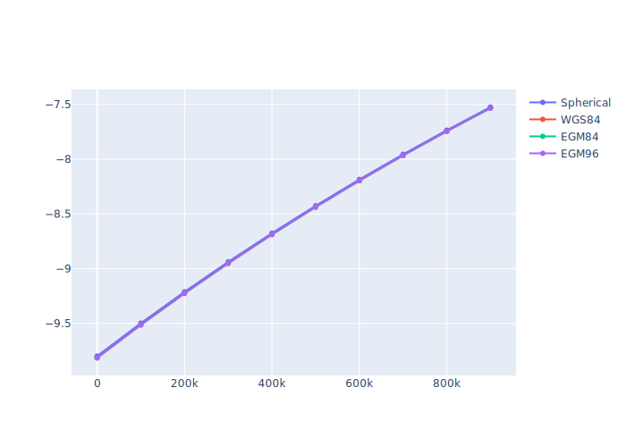

Gravitational Models Comparison¶
In this tutorial, we'll compare various Gravitational Models.
Setup¶
Let's import the necessary libraries:
import numpy as np
import pandas as pd
import plotly.graph_objs as go
from ostk.physics import Environment
from ostk.physics.time import Instant
from ostk.physics.environment.gravitational import Earth as EarthGravitationalModel
<frozen importlib._bootstrap>:241: FutureWarning: pybind11-bound class 'ostk.physics.coordinate.frame.provider.Dynamic' is using an old-style placement-new '__init__' which has been deprecated. See the upgrade guide in pybind11's docs. This message is only visible when compiled in debug mode.
Computation¶
environment = Environment.default()
earth = environment.access_celestial_object_with_name("Earth")
Let's set up some gravitational models:
gravitational_models = [
EarthGravitationalModel(EarthGravitationalModel.Type.Spherical),
EarthGravitationalModel(EarthGravitationalModel.Type.WGS84),
EarthGravitationalModel(EarthGravitationalModel.Type.EGM84),
EarthGravitationalModel(EarthGravitationalModel.Type.EGM96),
]
And evaluate them at various altitudes:
altitudes = list(range(0, 1000000, 100000))
instant = Instant.J2000()
positions = [
np.array([float(earth.get_equatorial_radius().in_meters() + altitude), 0.0, 0.0])
for altitude in altitudes
]
def evaluate_field_values(gravitational_model, positions):
field_values = [
np.transpose(gravitational_model.get_field_value_at(position, instant))[0]
for position in positions
]
return field_values
field_valuess = [
evaluate_field_values(gravitational_model, positions)
for gravitational_model in gravitational_models
]
print(field_valuess)
print(altitudes)
[[np.float64(-9.798285471812783), np.float64(-9.498117084672169), np.float64(-9.211533740415616), np.float64(-8.937727860123543), np.float64(-8.675950994401918), np.float64(-8.42550870321693), np.float64(-8.18575594562386), np.float64(-7.9560929221730206), np.float64(-7.735961319898761), np.float64(-7.524840915948707)], [np.float64(-9.814241041880868), np.float64(-9.513108776825897), np.float64(-9.225633270500504), np.float64(-8.951000633607185), np.float64(-8.688456744928928), np.float64(-8.437302058356305), np.float64(-8.196886929018294), np.float64(-7.9666074000230305), np.float64(-7.74590139862987), np.float64(-7.534245296986336)], [np.float64(-9.814307141616844), np.float64(-9.513178979811148), np.float64(-9.225699538056165), np.float64(-8.95106240934248), np.float64(-8.688514829376778), np.float64(-8.437357149910085), np.float64(-8.196939440406812), np.float64(-7.966657554394403), np.float64(-7.745949325710143), np.float64(-7.534291088893372)], [np.float64(-9.814284387550872), np.float64(-9.513160999207878), np.float64(-9.22568814318402), np.float64(-8.951055205359841), np.float64(-8.688510334843228), np.float64(-8.437354343587772), np.float64(-8.196937668392207), np.float64(-7.9666564151497585), np.float64(-7.745948576059298), np.float64(-7.534290581611349)]]
[0, 100000, 200000, 300000, 400000, 500000, 600000, 700000, 800000, 900000]
field_dfs = [
pd.DataFrame(
[
[altitude, field.tolist()]
for [altitude, field] in zip(altitudes, field_values)
],
columns=["$altitude [m]$", "$g_x$"],
)
for field_values in field_valuess
]
# field_dfs = [pd.DataFrame([[altitude, field.tolist()] for [altitude, field] in zip(altitudes, field_values)], columns=['$altitude [m]$', '$g_x$', '$g_y$', '$g_z$']) for field_values in field_valuess]
Display¶
Table:
field_dfs[0]
| $altitude [m]$ | $g_x$ | |
|---|---|---|
| 0 | 0 | -9.798285 |
| 1 | 100000 | -9.498117 |
| 2 | 200000 | -9.211534 |
| 3 | 300000 | -8.937728 |
| 4 | 400000 | -8.675951 |
| 5 | 500000 | -8.425509 |
| 6 | 600000 | -8.185756 |
| 7 | 700000 | -7.956093 |
| 8 | 800000 | -7.735961 |
| 9 | 900000 | -7.524841 |
Scatter plot:
figure = go.Figure(
data=[
go.Scatter(
x=field_df["$altitude [m]$"],
y=field_df["$g_x$"],
name=model.get_type().name,
)
for model, field_df in zip(gravitational_models, field_dfs)
]
)
figure.show("svg")
